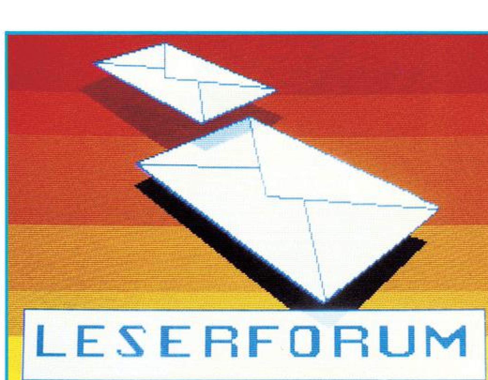

Fragen zum C 128
(1) Der C 128 hat, wie andere Commodore-Computer auch einen Audio-Eingang. Wie kann man diesen Eingang ansprechen, und mit welchem Pegel?
(2) Ich arbeite mit dem Drucker Fujitsu DX 2100 und möchte das Line Feed herausnehmen. Wie schaffe ich das?
(3) Ich möchte auf meinem Drucker den gesamten Zeichensatz des C 128 darstellen und dazu das Programm »Centronix« aus dem Sonderheft 4/85 benutzen, aber ohne die Schnittstelle. Wie ist das möglich?
(4) Im C 128-Modus kann man durch »POKE 2599,0« den Cursor einschalten und durch »POKE 2599,1« wieder ausschalten. Wie kann man nun aber verhindern, daß der Cursor als reverses Leerzeichen auf dem Bildschirm stehen bleibt?
Modelleisenbahnen mit dem Computer steuern?
Ich würde meine Modelleisenbahn gerne per Computer steuern lassen, besitze jedoch ein Märklin Z-Spur-Gleichstromsystem, so daß das von Märklin für die Wechselstrombahnen vertriebene Interface nicht funktioniert. Wo gibt es also die Hardware zur Ansteuerung eines Gleichstromsystems? Gibt es Software zur Steuerung von Modelleisenbahnen, die man auf seine eigenen Bedürfnisse »zuschneidern« kann?
Technischer Defekt?
Seit einiger Zeit habe ich mit meinem C 64 technische Probleme. Wenn ich ein Programm geladen und kurze Zeit keine Eingaben gemacht habe, dann führt das Gerät einen Reset aus und meldet sich mit der Einschaltmeldung wieder. Ein Aufenthalt meines Computers in einer Werkstatt zwecks Fehlersuche brachte neben dem Ergebnis »kein Defekt feststellbar« und 29,75 Mark Rechnungsbetrag nichts weiter zutage. Ich möchte noch erwähnen, daß der Fehler nicht ständig, sondern nur von Zeit zu Zeit (allerdings doch recht häufig) auftritt. Wer hat an seinem C 64 schon einen ähnlichen Fehler gehabt? Wie kann der Fehler beseitigt werden?
Save/Load-Anzeige für 1571?
Ist es möglich, das Floppy-Laufwerk 1571 mit einer Anzeige für die Ausführung der Befehle SAVE und LOAD auszurüsten?
CP/M-Programme vom Apple II auf den C 128?
Wie kann ich CP/M-Programme vom Apple II auf den Commodore 128 übertragen? Kann die 1571 auf dieses Diskettenformat programmiert werden, oder muß eine Hardware-Lösung her?
Lange Strings einlesen?
Wie kann man bei einem Commodore-Rechner Strings mit einer Länge von über 80 Zeichen von der RS232-Schnittstelle einlesen, die mit der Ende-Kennung CR/LF gesendet werden?
Eine Basic-GET-Schleife ist zu langsam, der INPUT-Befehl aber läßt nur bis zu 80 Zeichen zu.
»Kassetten-Layout« für Star SG 10?
Wie ist es möglich, das Programm »Kassetten-Layout« aus dem Sonderheft 7/85 mit einem Star-Drucker SG 10C anzuwenden?
Wer kennt Olympia Carrera?
Wer hat Erfahrungen mit der Typenradschreibmaschine Olympia Carrera und weiß, wie man die Maschine mit dem Programm Vizawrite auf dem C 64 zum Laufen bekommt?
Echtzeituhr geht falsch?
Warum laufen die CIA-Echtzeituhren am SX 64 trotz richtiger Programmierung pro Minute ungefähr zehn Sekunden zu schnell, und wie kann man den Fehler beheben?
Spielprobleme
(1) Das Spiel »Springvogel« aus dem 64'er-Magazin stürzt bei Verwendung von Turbo Tape ab. Was kann man hier tun?
(2) Beim »Grab des Pharao« (ebenfalls 64'er-Magazin) komme ich nicht weiter. Ich bin in der Pyramide und habe bereits den Tonkrug mit Essen, das Seil und den Schlüssel. Wenn ich jedoch eine der Türen öffne oder zerstöre, öffnet sich immer eine Falltüre. Wer kann mir bei diesem Problem helfen?
VC 20-Kontakt
Ich möchte von dem im Leserforum gemachten Vorschlag, Kontakte zwischen VC 20-Besitzern zu vermitteln, Gebrauch machen und kann interessierten Lesern eine Reihe von für den VC 20 umgeschriebenen 64'er-Listings gegen Unkostenerstattung zur Verfügung stellen. Es handelt sich dabei unter anderem um Smon, Hypra-Assembler, GBasic und um die Maschinenroutinen aus dem ersten Abenteuer-Sonderheft. Interessenten wenden sich bitte mit einem frankierten Rückumschlag an
C 64 und Pocket-Computer verbinden?
Ich suche Hard- und Software, um einen Sharp PC 1402 Pocket Computer an den C 64 und/oder MPS 803 anzuschließen.
Wer kennt den GX-80?
Ist es möglich, das Betriebssystem des GX-80 von Epson so zu ändern, daß die deutschen Umlaute geschrieben werden können? Kann man den GX-80 auch dazu bringen, Hi-Eddi-Grafiken im Großformat auszudrucken?
PC 100 — Drucker am C 64?
Ich möchte den PC 100 C-Thermodrucker (Texas Instruments, gehört zum TI 59-Rechner) per User-Port an den C 64 anschließen. Wer kann Hinweise zum Anschluß und zur Ansteuerung geben?
Wo ist der Z80-Makro-Assembler?
Auf meiner CP/M-System-Diskette zum C 128 kann ich die Programme RMAC, MAC und SID nicht finden. Sie werden zwar im Handbuch erwähnt und im CP/M-Help-File erklärt, sind aber einfach nicht auf der Diskette. Befinden sich diese Programme etwa auf der zusätzlichen CP/M-Diskette, die man gegen Zahlung von 80 Mark anfordern kann?
In der Tat, diese Programme (es handelt sich dabei um zwei Makro-Assembler für den Z80 und um einen Maschinensprache-Monitor) befinden sich auf der zusätzlichen CP/M-Tools-Diskette, zusammen mit einer Reihe weiterer kleiner CP/M-Programme. Nach Auskunft von Commodore war es aus Platzgründen nicht mehr möglich, diese Programme noch auf der Systemdiskette unterzubringen. RMAC, MAC und SID sind notwendig, wenn man den Z80-Prozessor direkt auf der Maschinenebene programmieren will.
RS232-Schnittstelle und CP/M?
Wie ist es möglich, im CP/M-Modus die RS232-Schnittstelle des C 128 anzusprechen?
Offenbar wegen eines Fehlers im BIOS ist die Ansteuerung der RS232-Schnittstelle unter CP/M von Commodore unterbunden worden. Die BDOS-Routinen für die serielle Schnittstelle kehren einfach unverrichteter Dinge zurück. Dieser Fehler wird bei zukünftigen Versionen des CP/M-Systems für den C 128 sicher behoben werden.
Tips zum CP/M-Modul
Ich habe mir vor einiger Zeit ein gebrauchtes CP/M-Modul für den C 64 gekauft, das leider nur beim Verkäufer ordnungsgemäß lief, bei mir aber nicht. Auch der Hinweis im 64'er in Richtung eines verstärkten Netzteiles brachte keine Verbesserung.
Eine genauere Untersuchung ergab nun, daß das von der CP/M-Karte gesteuerte Übertragen des BIOS von der Diskette in den RAM-Bereich des C 64 nicht einwandfrei durchgeführt wird. Die Karte scheint den Datenbus stark zu belasten. Das Oszillogramm zeigt jedenfalls eine deutliche Veränderung der Signale. Es entstehen lange Flanken, wodurch die Zeit, in der die Datensignale gültig anliegen, um etwa ein Drittel verkürzt wird.
Ich habe daher die RAM-Bausteine durch schnellere (150 ns) Typen ersetzt. Seitdem läuft die Karte bei mir ohne Probleme, auch mit Speed-Dos. Mir ist auch aufgefallen, daß die CP/M-Karte bei den C 64, die 4164/2-Bausteine eingebaut haben, offenbar durchweg funktioniert.
Fragen zum C 128
(1) Manche Spiele laufen im C 64-Modus nicht richtig. Der Bildschirm ist dann mit vielen grafikähnlichen Zeichen beschrieben und es tut sich rein gar nichts mehr.
(2) Der MSE 1.0 aus der 64'er funktioniert bei mir nicht. Er ignoriert alle Tasten außer Q, Z, 2 und Leertaste.
(3) Nach einem Reset bleiben Maschinensprache-Programme offenbar im Speicher stehen und werden nicht gelöscht. Ist dieser Umstand normal?
(4) Warum kann der C 128 Programme für den C 64 trotz seiner sprachlichen Kompatibilität nicht auch im C 128-Modus direkt ausführen?
(5) Ist es normal, daß im 40-Zeichen-Modus bei bestimmten Farbkombinationen die Buchstaben verwischt und unleserlich werden?
(6) In verschiedenen Artikeln ist von einer RS232-Schnittstelle über den User-Port die Rede. Ich brauche eine solche Schnittstelle zum Anschluß meines Druckers, habe aber kein Programm, um den User-Port ansprechen zu können.
(1) Es ist möglich, daß einige Spiele infolge des verwendeten Kopierschutzes nicht richtig mit einem 1570/1571-Laufwerk geladen werden können.
(2) Entweder haben Sie den MSE falsch abgetippt, oder Sie betreiben das Programm irrtümlich im C 128-Modus (was nicht funktionieren kann). Der MSE ist auf jeden Fall ohne Fehler.
(3) Bei einem Reset wird nur der Computer neu initialisiert, Maschinenprogramme bleiben aber in der Regel erhalten.
(4) Der Grund hierfür ist die völlig andere Speicherverwaltung (Bankswitching) im C 128-Modus gegenüber dem C 64. Die meisten POKE-, PEEK- und SYS-Befehle des C 64 funktionieren daher nicht im C 128-Modus.
(5) Bei einigen Farbkombinationen ist der Monitor einfach überfordert: Die Zeichen werden verschwommen und undeutlich dargestellt. Dies ist völlig normal und kein Grund zur Beunruhigung.
(6) Um die RS232-Schnittstelle anzusprechen, brauchen Sie keine weitere Software; die ist bereits im Betriebssystem vorhanden. Im der Ausgabe 5/86 finden Sie nähere Informationen über die RS232-Schnittstelle des C 64, die mit der des C 128 identisch ist.
Hardware-Probleme
(1) Aus der Ausgabe 4/86 des 64'er-Magazins habe ich erfahren, wie man einseitige Platinen ätzt. Aber nun möchte ich auch doppelseitige Platinen selbst herstellen und hätte gerne gewußt, wie man dabei vorgehen muß.
(2) Wie lange dauert die Belichtung einer Platine, wenn man sie mit einer UV-Lampe belichtet, und welche Vorteile bringt die Verwendung einer solchen UV-Lampe gegenüber einer Nitraphot-Lampe?
(3) Ist es möglich, ein EPROM zu löschen, indem man es einige Zeit unter eine normale UV-Lampe legt?
(4) Wie teuer ist ein EPROM des Typs 27512?
(1) Die Herstellung doppelseitiger Platinen ist sehr aufwendig und kann, wenn überhaupt, nur sehr erfahrenen Elektronik-Bastlern empfohlen werden. Wie man dabei vorgehen muß und welche Hilfsmittel man braucht, das läßt sich leider nicht mit wenigen Sätzen beschreiben. Wir müssen Sie daher auf die einschlägige, in jedem Fachgeschäft erhältliche Literatur verweisen.
(2) Eine UV-Lampe sorgt allgemein für eine kürzere Belichtungszeit. Die genauen Zeiten hängen aber von verschiedenen Faktoren ab, deshalb können darüber keine allgemein gültigen Aussagen gemacht werden.
(3) Ja, natürlich. Auch ein spezielles EPROM-Löschgerät arbeitet nur mit UV-Licht. Bei gutem Wetter kann man sich speziell an der Küste und in den Bergen sogar damit behelfen, EPROMs einfach für einige Tage in der Sonne liegenzulassen.
(4) Dieses EPROM ist derzeit noch sehr schwierig zu bekommen. Der Preis liegt ungefähr zwischen 60 und 80 Mark.
Silver Reed EX 42 am C 64
Wie kann man die Schreibmaschine Silver Reed EX 42 am C 64 verwenden?
Ausgabe 4/86
Ich arbeite seit einigen Monaten ohne Störung mit einer Silver Reed EX 42 an meinem C 128 (auch im C 64-Modus) und verwende dazu ein Interface der Firma M.B.I. Data Products.
Info: Silver Reed Interface, Preis 300 Mark, M.B.I. Data Products, Lignitzer Str. 48-50, 5600 Wuppertal 2
CP/M-Probleme beim C 128
(1) Ich arbeite seit einiger Zeit mit WordStar 3.0 für den C 128. Beim Ausdrucken erscheinen nun stets die beiden letzten Zeichen einer Textzeile in der nächsten Druckzeile, und zwar am äußersten linken Rand, während eine normale Textzeile etwas weiter rechts beginnt. Ich habe festgestellt, daß man diesen Effekt verhindern kann, indem man die rechte Randeinstellung auf 70 Zeichen begrenzt. Allerdings erscheint mir das doch recht unkomfortabel zu sein.
WordStar fängt beim Ausdruck nicht am äußersten linken Rand an, sondern läßt links und rechts vom Text etwas Raum frei. Dadurch hat man beim Ausdruck nicht die vollen 80 Zeichen zur Verfügung, sondern entsprechend weniger. Durch diese Eigenschaft von WordStar wird das Erscheinungsbild einer gedruckten Seite stark verbessert und ähnelt mehr einer konventionellen Schreibmaschine, die ja auch nur etwa 60 bis 65 Zeichen in eine Zeile bringt. Wenn man unbedingt die volle Druckbreite ausnutzen möchte, dann kann man den linken und rechten Rand auch abschalten. Hierzu verwendet man das Installationsprogramm. Nähere Angaben hierzu bietet das Handbuch.
Autostart für C 64
Ich suche nach einer einfachen Möglichkeit, ohne Maschinensprache-Kenntnisse einen Autostart von Programmen zu erreichen.
Ausgabe 4/86
Hier ist die Lösung des Problems:
(1) Programm laden
(2) Im Direktmodus eingeben: PRINT"[clr] POKE 45, ";PEEK (45); ":POKE46,";PEEK(46);": RUN"
(3) Zweimal (cursor down) drücken
(4) Eingabe von: POKE631,19:POKE632,13: POKE198,2:POKE43,198: POKE44,0:SAVE"Neuer Name",8
(5) Den jetzt erscheinenden »SYNTAX ERROR« ignorieren
(6) Eingabe von: POKE43,1: POKE44,8
(7) Fertig. Das Programm muß jetzt mit LOAD "Neuer Name",8,1 geladen werden und startet automatisch.
1541-Wärmeprobleme gelöst?
Besteht die Möglichkeit, die bei der Floppy-Station 1541 ab und zu auftretenden Wärmeprobleme dadurch zu lösen, daß man ganz einfach den Trafo ausbaut und separat betreibt? Kann man eventuell sogar den C 64-Trafo für beide Geräte gleichzeitig verwenden (Verlängerungskabel mit einem Anschluß für den C 64 und einem für die 1541)?
Prinzipiell ist zumindest die erste Möglichkeit ein Weg zur Linderung von Wärmeproblemen. Das eigentliche Übel bei der 1541 besteht jedoch nicht aus der Wärmeentwicklung des eingebauten Trafos, sondern aus den beiden integrierten Spannungsreglern, die eine enorme Hitzeentwicklung haben. Der Ausbau des Trafos löst also das Problem, wenn überhaupt, nur zu einem kleinen Teil.
Der Trafo des C 64 schließlich kann auf keinen Fall auch die Stromversorgung des Floppy-Laufwerks übernehmen. Erstens benötigt die 1541 andere Spannungen (12 V und 5 V), und zweitens könnte der C 64-Trafo beim besten Willen der zusätzlichen Belastung durch das Laufwerk nicht standhalten.
Ich habe einen C 128 und einen Philips-Monitor CM 8533. Bei der 80-Zeichendarstellung stehen beim RGB-Signal nur acht Farben zur Verfügung. Wie kommt das?
Der RGB-Ausgang des C 128 kann für jedes Farbsignal (Rot, Grün und Blau) nur je einen Pegel (High oder Low) führen. Damit lassen sich maximal 23=8 Farbwerte von schwarz bis weiß erzeugen.
Daß der 1901 von Commodore jedoch 16 Farben im 80-Zeichenmodus darstellt, liegt an der Verwendung eines vierten Signals. Es ist für die Intensität der Farbwerte zuständig, und wird demzufolge »Intensity« genannt. Natürlich kann es nur genutzt werden, wenn der Monitor einen entsprechenden Eingang besitzt.
Worin liegt der Vorteil des RGB-Signals gegenüber dem Composite?
Das Composite-Signal muß, da es nur an einem Ausgang anliegt, zur Übertragung aus den Farb-Signalen gemischt werden. Um daraus ein Bild zu erhalten, müssen die gemischten Signale »entwirrt« werden. Dies ist ein analoger Vorgang, der nicht 100prozentig verlustfrei arbeitet.
Somit müssen zum Teil erhebliche Qualitätsverluste in Kauf genommen werden, die bei der RGB-Direktübertragung aufgrund der eindeutigen Übertragung entfallen.
Kann ich an den Commodore 1701 einen Video-Recorder anschließen?
Ja, Sie können. Dazu müssen Sie nur den Video-Ausgang des Recorders an den Composite-Eingang des 1701, und wenn Sie wollen, die Audio-Aus- und Eingänge zusammenschließen.
Läßt sich der 1901 später für den Amiga verwenden?
Zunächst einmal geht es nur mit einem »deutschen« Amiga. Da der 1901 nur über einen digitalen RGB-Eingang mit Intensitäts-Signal verfügt, ständen Ihnen von 4096 Farben nur 16 zur Verfügung.